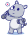

- Terapéuticas
- Exercícios Físicos
- Alimentícios
- Produtividade
 Favoritos
Favoritos
Planeje a sua semana. Montar um cronograma pessoal para a semana ou até mesmo para o mês , estabelecendo pequenas metas , ira te ajudar a focar mais em seus objetivos pessoais e também contribui para o controle da ansiedade . Já que pensar em dar apenas um passo por vez , evita os pensamentos excessivos no futuro.
Calcule o seu gasto energético total , existem diversas fórmulas para calcular o seu gasto total . Com ele você será capaz de controlar e administrar melhor a sua dieta.
Contar a quantidade de calorias que você ingere durante o dia , pode facilitar quantas calorias você deve consumir para ganhar ou perder peso.
Durma em média 8 horas por dia , já que uma noite de sono impacta diretamente na sua rotina diária . Uma noite de sono ruim , pode afetar seu humor e disposição durante todo o dia , diminuindo o seu rendimento em todas as atividades.
Beber bastante água é essencial para uma boa saúde de forma geral. Caso você tenha dificuldade em controlar o seu consumo durante o dia , existem diversos aplicativos que te ajudam a controlar essa ingestão.
Pratique 30 minutos de atividade física todos os dias , de acordo com a OMS o ideal é que as pessoas se exercitem 150 minutos durante a semana. Essa meta pode ser atingida praticando 30 minutos , 5 vezes na semana.
Procure um especialista na área , um nutricionista , nutrólogo , psicólogo e entre outros . Pode ser o mais ideal caso você esteja passando por algum tipo de dificuldade , ele poderá te guiar de maneira mais específica para atender as suas necessidades pessoais.